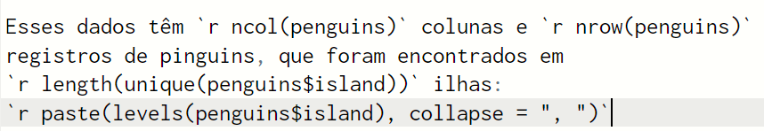
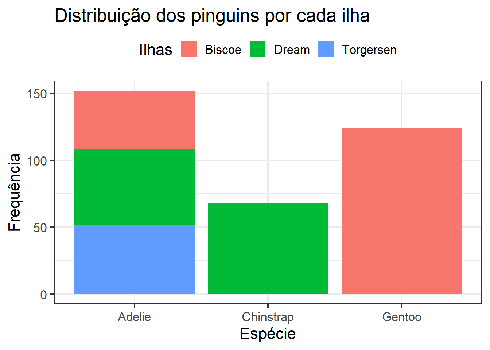

![]()


%% { init: { 'flowchart': { 'curve': 'monotoneX'} } }
flowchart LR
A["📓 Quarto (qmd)"] -->|" R "| B("🧶 knitr")
A -->|" Python "| C("📦 jupyter")
B --> D["📝 Markdown (md)"]
C --> D
B --> E("🖼️ png, svg, etc.")
C --> E
D --> P(["⚙️ pandoc"])
E --> P
P --> F{{"🔮"}}
F --> G["🌐 HTML"]
F --> H["📄 PDF"]
F --> I["📃 DOCX"]
F --> L["📘 EPUB"]
F --> M[... y muchos mas]
classDef output fill:#f8d568;
class G,H,I,L,M output;
classDef interm fill:#7cfc00;
class B,C,D,E interm;
style P fill:#e6e6fa,stroke-width:3px;
style A fill:yellow,color:black;
style F fill:white,stroke-width:2px,stroke-dasharray:5 5;
Uma introdução ao Quarto
Agenda
- O que é Quarto e para que serve?
- Conceitos básicos de programação literal
- O que podemos criar com Quarto (Exemplos)
- Estrutura de um documento em Quarto
- Próximos passos
Dizer:
Você provavelmente não conhece muito sobre o Quarto e a tecnologia que ele representa. Esta apresentação tem como objetivo lhe dar uma introdução ao Quarto, como ele pode ser usado com R para criar relatórios, sites, apresentações como esta, dashboards, etc.
O que é quarto?
Arte de Allison Horst
Quarto® (1)
- É um novo1 sistema de código aberto, para produção de publicações científicas e técnicas, que reutiliza ferramentas abertas existentes
- Baseado na combinação de descrição (texto) e código (R, Python, etc.) para gerar relatórios, livros, sites, dashboards, apresentações (como esta 😄), etc.
Quarto® (2)
- Aprenda com quase uma década de uso do RMarkdown2 pela comunidade global de usuários do R.
- Mantido pela Posit, PBC (anteriormente RStudio, PBC), e com uma grande comunidade ativa de desenvolvedores que contribuem para o seu aprimoramento.
Quarto vs RMarkdown (1)
- Com o RMarkdown você pode fazer relatórios, páginas web e apresentações simples, assim como fazemos no Quarto.
- Mas para produzir dashboards, livros, artigos científicos, sites (blogs), etc. uma série de pacotes extras precisam ser usados, às vezes combinações de vários deles. Quarto já tem isso incluso.
Quarto vs RMarkdown (2)
- RMarkdown mistura Markdown com seções escritas em R, e não é fácil incorporar código em outras linguagens de programação (por exemplo, Python, Julia). No Quarto, há suporte para utilização de múltiplas linguagens de programação no mesmo documento.
- Incluir componentes como diagramas, referências a tabelas ou figuras, entre outros, requer configurações especiais e pacotes secundários no RMarkdown, não no Quarto, que já possui suporte para todas essas funcionalidades.
Dizer:
Embora o RMarkdown permita muito do que podemos fazer com o Quarto, não precisamos instalar uma série de pacotes extras (com suas dependências) como teríamos que fazer para fazer coisas mais complicadas no RMarkdown.
Do RMarkdown para o Quarto

Novos características no Quarto
- Referências cruzadas
- Design avançado
- Painéis avançados para distribuições e figuras
- Diagramas
- Extensões
- Gerenciamento de bibliografia
- Interatividade
- Metadados inteligentes (YAML)
- Publicação em vários formatos
- Conteúdo condicional
- Filtros em notebooks
Objetivos do Quarto
- Melhorar drasticamente o processo de criação e colaboração na produção de conteúdos reproduzíveis: relatórios técnicos, artigos científicos, etc., com base na experiência de desenvolvimento e utilização do RMarkdown.
- Permitir a utilização do mesmo documento de origem, que pode ser convertido para vários formatos: HTML, PDF, MS Word, ePub, OpenDocument, etc.
- Incluir outras linguagens de programação dentro do paradigma programação literal.
Programação literal (1)
- O termo “Programação Alfabetizada” foi cunhado por Donald Knuth em 1984.
- Envolve combinar a explicação do funcionamento de um programa, de forma narrativa e utilizando uma linguagem natural, e não apenas a sintaxe formal de uma linguagem de programação.
- Qualquer forma de comunicação técnica e científica (artigo, pôster, apresentação, relatório), envolve contar uma história para que a mensagem seja inteligível.
Programação literal (2)
- A programação literal permite escrever, de forma integrada, o código utilizado para o cálculo, de forma a contextualizar e significar os resultados, explicar pressupostos, considerações e decisões da análise.
- Tudo isto torna o documento criado não só mais compreensível, mas eminentemente reproduzível e replicável.
O que podemos criar com Quarto?
Como funciona o Quarto?
Quarto: Componentes

- Use YAML (Yet Ain’t Markup Language), uma linguagem para descrever conteúdo, fácil de editar, entender e ler.
- No Quarto, descreva os parâmetros do documento e quais formatos de saída serão gerados.
- Contém também informações sobre autoria, idioma do texto, etc.

- Inclui código em R (ou Python, Julia e ObservableJS) para processar dados e gerar resultado, tabela, gráfico, etc.
- É delimitado por aspas invertidas, indicando o idioma utilizado:
```r
# ... código em R
```
- Itálico (
*Itálico*) - Destacado (
**Destacado**) - Cabeçalhos:
- Primeiro nível (
#H1) - Segundo nível (
## H2), etc. - Listas (
- Listas) - Equações: \(E = mc^{2}\) (
Equações: $E = mc^{2}$)
Quarto na prática
Arte de Allison Horst
Um exemplo desenvolvido
- Usaremos os dados do pacote {palmerpenguins}, como base para criar um relatório HTML simples usando Quarto- O documento em Quarto conterá:
- Uma breve descrição dos dados
- Código para processar os dados
- Algumas tabelas de resumo
- Dois gráficos: um gráfico de barras e um gráfico de dispersão
Instalando o Quarto
Baixe e instale o executável em https://quarto.org/docs/get-started/ 
Instalando pacotes no RStudio
Vamos ter certeza de que temos {tidyverse} e {palmerpenguins} instalados
install.packages("tidyverse")
install.packages("palmerpenguins")Metadados do documento
---
1title: "Pinguins de Palmer"
subtitle: "Um exemplo de uso do Quarto"
2license: CC BY-NC-SA
3author:
- name: Jesus M. Castagnetto, Ph.D.
orcid: 0000-0002-7188-1605
email: jesus@upch.pe
affiliation: INSIGHT Project / UPCH
4lang: pt
5format:
html: # gera HTML
code-fold: true # esconde o código
self-contained-math: true
embed-resources: true
toc: true
execute: # inclui código em HTML
warning: false
echo: true
---- 1
- Título e subtítulo
- 2
- Licença
- 3
- Autoria
- 4
- Idioma (portuguese)
- 5
- Formatos de saída
Carregando bibliotecas e dados
```r
# carregamos as bibliotecas que precisamos
library(tidyverse)
library(knitr)
library(palmerpenguins) # dados
```Adicionando uma introdução
## Introdução
Este é um exemplo de relatório simples,
em formato HTML, gerado usando Quarto.
Vamos usar os dados dos pinguins do arquipélago
de Palmer (Antártica), que eram originalmente
coletado por **Dr. Kristen Gorman**, como
parte do *Programa de Pesquisa Ecológica
Plano de Longo Prazo da Estação Palmer* (LTER:
Pesquisa Ecológica de Longo Prazo).Misturando código e texto
Podemos adicionar cálculos e resultados diretamente, junto com o texto, utilizando crases, e indicando a linguagem de programação, conforme mostrado abaixo:

Como é a introdução

Preparando os dados
esp_sexo <- penguins %>%
group_by(
species,
sex
) %>%
summarise(
total = n(),
n_islas = n_distinct(island),
prom_long_pico = mean(bill_length_mm, na.rm = TRUE),
sd_long_pico = sd(bill_length_mm, na.rm = TRUE),
prom_prof_pico = mean(bill_depth_mm, na.rm = TRUE),
sd_prof_pico = sd(bill_depth_mm, na.rm = TRUE),
prom_long_ala = mean(flipper_length_mm, na.rm = TRUE),
sd_long_ala = sd(flipper_length_mm, na.rm = TRUE),
prom_peso = mean(body_mass_g, na.rm = TRUE),
sd_peso = sd(body_mass_g, na.rm = TRUE)
) %>%
ungroup() %>%
mutate( # Muda o conteúdo para portuguese
sex = case_when(
sex == "male" ~ "Masculino",
sex == "female" ~ "Femenino",
is.na(sex) ~ "Desconhecido"
)
)Dados para tabelas
# Vamos usar mutate() para criar novos
# colunas no formato que desejamos
tab_pinguinos <- esp_sexo %>%
mutate(
long_pico = paste(
round(prom_long_pico, 1),
" (",
round(sd_long_pico, 1),
")"
),
prof_pico = paste(
round(prom_prof_pico, 1),
" (",
round(sd_prof_pico, 1),
")"
),
long_ala = paste(
round(prom_long_ala, 1),
" (",
round(sd_long_ala, 1),
")"
),
peso = paste(
round(prom_peso, 1),
" (",
round(sd_peso, 1),
")"
)
) %>%
select( # seleccionar y renombrar las columnas
Especie = species,
Sexo = sex,
Total = total,
Islas = n_islas,
"Pico (long)" = long_pico,
"Pico (prof)" = prof_pico,
Aleta = long_ala,
Peso = peso
)Produzindo as tabelas
# tabela 1
kable(
tab_pinguinos %>%
select(
Especie,
Sexo,
Total,
Islas
)
)# tabela 2
kable(
tab_pinguinos %>%
select(
-Total,
-Islas
)
)As tabelas

Um gráfico de barras
ggplot(
penguins,
aes(x = species, fill = island)
) +
geom_bar() +
labs(
title = "Distribuição dos pinguins por cada ilha",
x = "Espécie",
y = "Frequência",
fill = "Ilhas"
) +
theme_bw(16) +
theme(
legend.position = "top"
)
O gráfico de dispersão (pontos)
ggplot(
penguins,
aes(x = bill_length_mm,
y = flipper_length_mm,
color = species)
) +
geom_point() +
scale_color_brewer(palette = "Paired") +
labs(
title = "Relação entre a longitude do pico e a aleta",
subtitle = "Pinguins do Palmer",
x = "Longitude do pico (en mm)",
y = "Longitude da aleta (en mm)",
color = "Espécie"
) +
theme_classic(16)